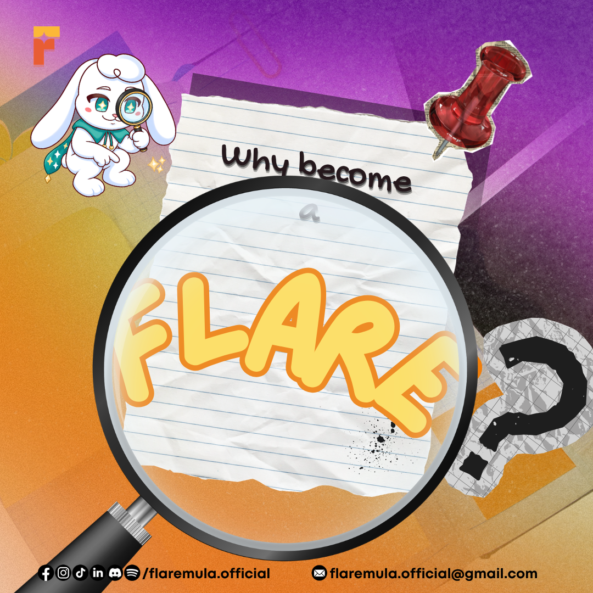
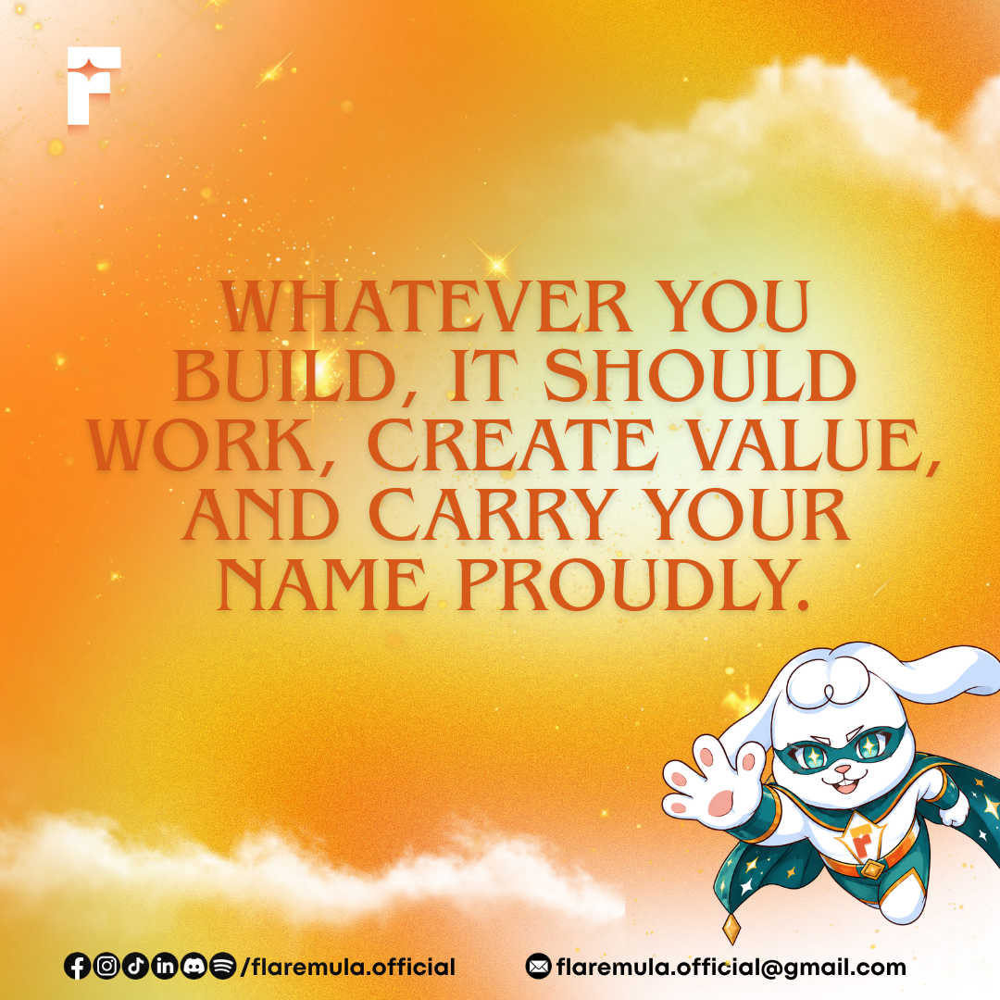
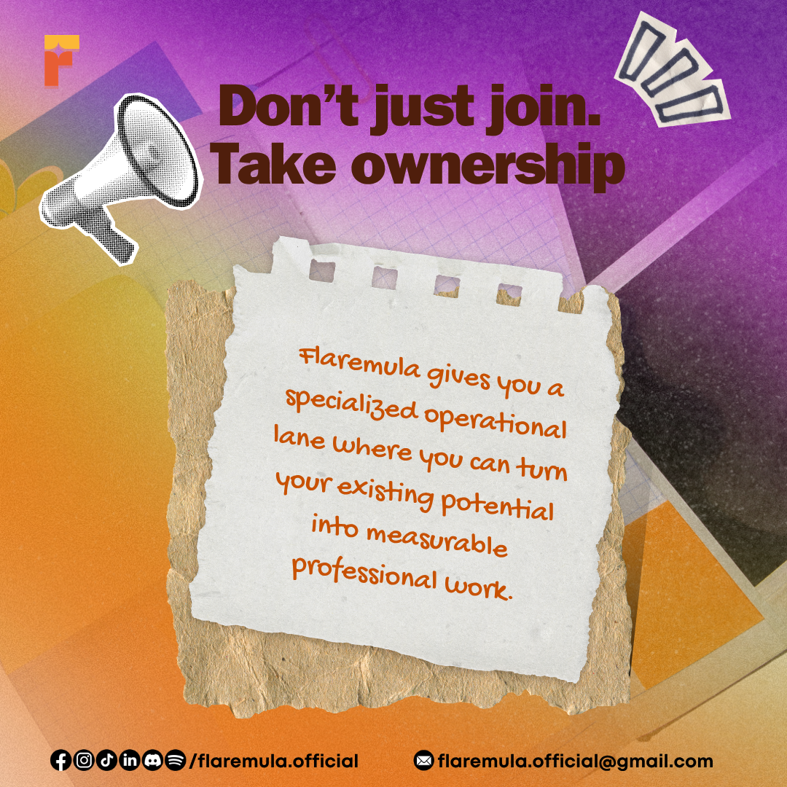
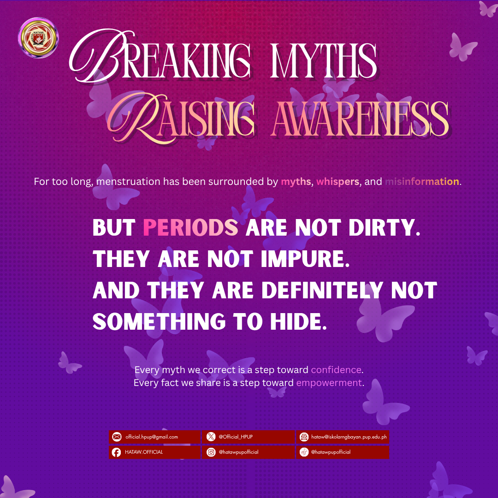
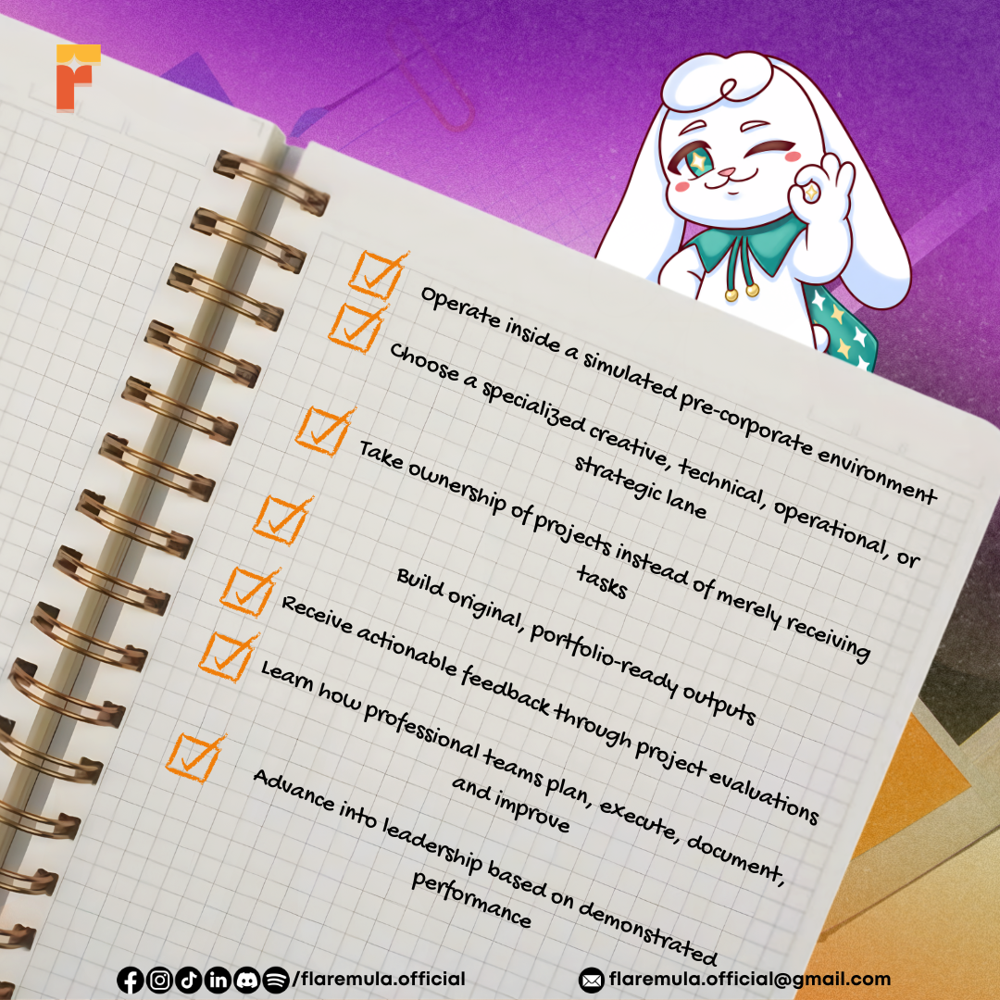
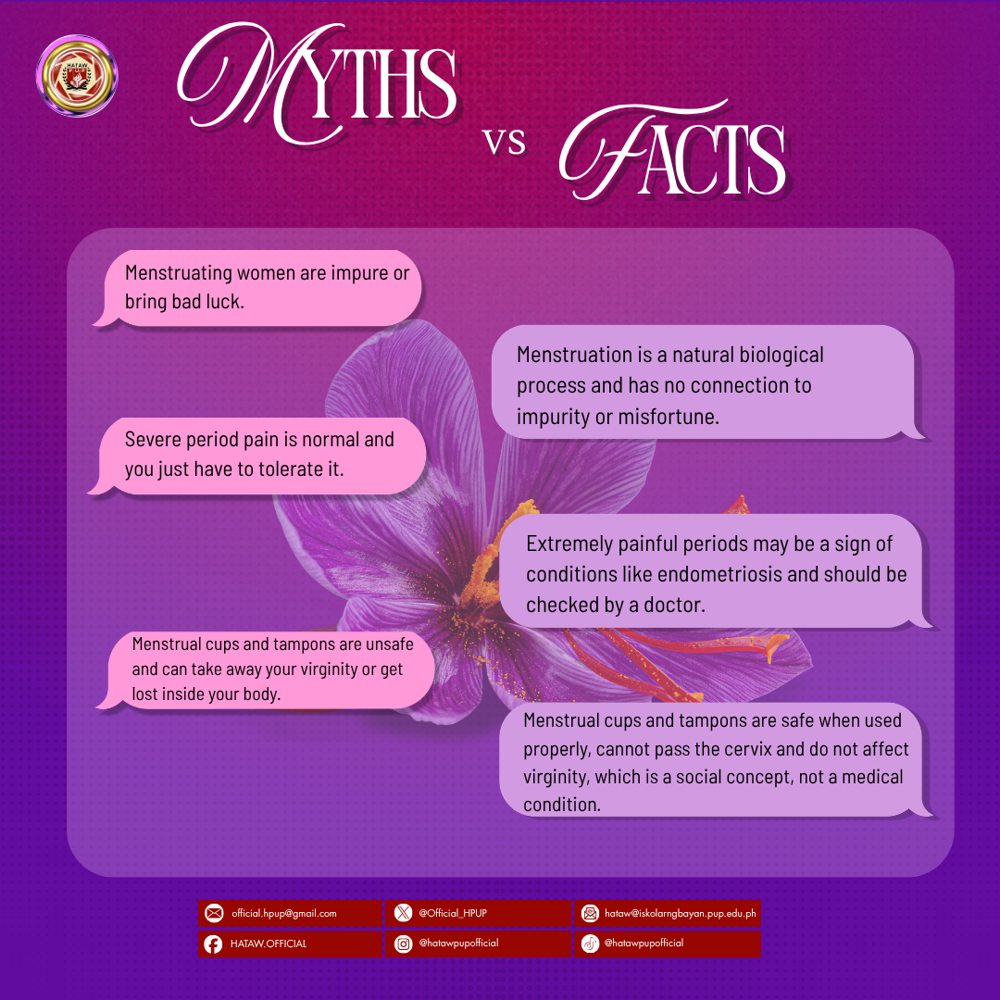
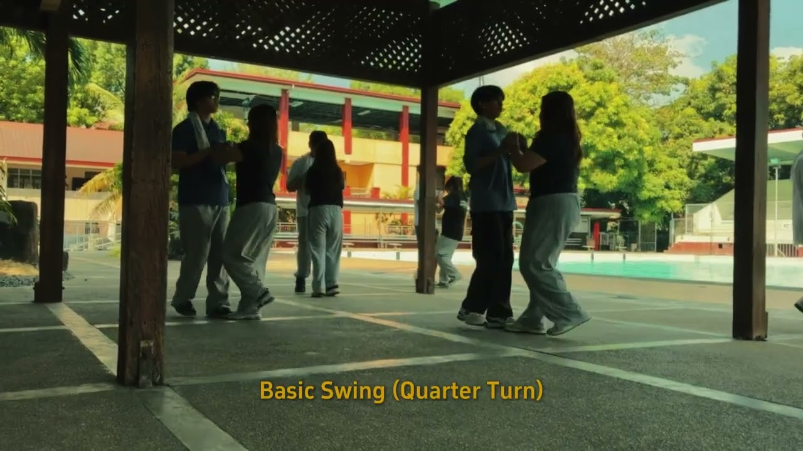

01
Data Analytics & Business Intelligence
Transforming messy datasets into structured, actionable insights. Proven experience auditing administrative databases at DOST-ITDI and building SQL database schemas.
Detail-oriented Information Technology student and President of IBITS (A.Y. 2026–2027) at PUP Manila. I bridge the analytical rigor of SQL, Python, and dataset modeling with high-impact growth marketing, visual pubmats, and executive governance to build data-backed, high-retention campaigns.
I believe raw data is only as good as the action it inspires. As an IT student at Polytechnic University of the Philippines (PUP Manila), my sweet spot is extracting concrete intelligence from datasets and turning it into compelling marketing campaigns, accessible digital systems, and university-wide event logistics.
Transforming messy datasets into structured, actionable insights. Proven experience auditing administrative databases at DOST-ITDI and building SQL database schemas.
Designing audience-tailored digital campaigns, sponsor promotions for Google Developer Groups, and tracking conversion funnels from impressions to active engagement.
Crafting high-retention publication materials (pubmats), social media collateral, and short-form video reels that elevate brand authority and student engagement.
As President of IBITS (A.Y. 2026–2027) and Overall Co-Head of AFK 2026, I orchestrate executive student governance, organizational operations, academic support programs, and departmental summits.
Test and interact with simulated marketing campaign datasets, real-time conversion graphs, and live SQL database queries.
Total Impressions
248,500
↑ +24% YoY GrowthConversion Rate
4.82%
↑ +1.2% above benchmarkAvg. Acquisition Cost (CAC)
₱42.10
↓ Optimized -18%Return On Ad Spend (ROAS)
4.6x
↑ High MarginA comprehensive showcase across Data Analytics, Growth Marketing, Web Development, and Visual Media. Click any card to inspect full details and outcomes.

Organized, audited, and formatted 15,000+ data rows using Google Sheets and Microsoft Excel to boost administrative record accessibility and support departmental workflow efficiency.
Engineered a dynamic database platform using Node.js, SQL, and clean UI to streamline government member records with full CRUD functionality and optimized database queries.

Developed an accessible, responsive municipal web platform using HTML5, CSS3, and JavaScript adhering to accessibility guidelines for Persons with Disabilities (PWD).

Promoted corporate sponsor products, managed attendee engagement streams reaching 850+ participants, and tracked post-event sentiment analytics for technical sessions.

High-engagement publication material tackling myths and facts surrounding menstrual health, achieving 3,000+ organic impressions across the student community.

Created cohesive branding assets and multi-slide pubmats communicating organizational values, resulting in a +45% surge in student applicant submissions.

Led editorial standards, managed writing assignments for 20+ student journalists, and broadcasted campus news via radio programming to reach over 2,000 students.

High-energy event recaps, short-form reels, color grading, audio synchronization, and narrative pacing engineered for high retention on social channels.
Photos stacked like a loose deck of prints. Drag and throw the top card in any direction, use the buttons, or arrow keys to browse!
Combining structured governance, cross-functional team execution, and data-backed operational efficiency.
Institute of Bachelor's Information Technology Studies (IBITS) · PUP Manila
Institute of Bachelor's Information Technology Studies (IBITS) · PUP Manila
PUP Manila · Major IT Summit
Google Developer Groups (GDG) – PUP Manila
Department of Science and Technology – ITDI · Bicutan, Taguig City
The Marrow (Official English Journalism Club) · Taguig City
A track record of consistent academic excellence, civic youth leadership, and high scholastic standing.
Polytechnic University of the Philippines – Manila
2024 – 2026Consistently recognized among the top-performing BSIT students at PUP Manila, maintaining academic excellence alongside high-responsibility executive leadership roles.
Stand Alone SHS within Taguig Integrated School
Batch 2023 – 2024Graduated as overall batch valedictorian of the STEM strand (Science, Technology, Engineering, and Mathematics), delivering the valedictory address.
City Government of Taguig
2024Awarded by the City of Taguig in recognition of exemplary youth leadership, public service contributions, and exceptional civic character.
Looking for a data-driven marketer or an analytical IT professional? Let's discuss internships, projects, or full-time opportunities.
📞 Contact Number: 09106572707 · Taguig City, Metro Manila